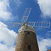

Moussieu l'Rédacteu,
"Papa," j'lî dis eune séthée auprès l'thée quand j'tais mousse, "quand Moussieu L'Chèr est v'nu à la forge auve sa jément pour êt' féthée, i' nouos a dit qué l'aube du moulîn est en haut à matîn. Tch'est qu'ch'là veurt dithe? J'avais tréjous pensé qu'un moulin en a quatre, aubes, et tch'i' touannent toutes en même temps et qu' ieune né peut pon rester en haut à mains qu' oulle arrête là par accident manque dé vent. Mais i' ventait gentiment à matîn."
"Eh bein," Papa m'dit, "tu'as raison. Lé moulîn a quatre aubes tchi touannent en même temps, mais y'a d'la machinn'nie en d'dans du moulîn tchi pèrmet au monnyi dé l's arrêter quand i' n' a pon rein à moudre. Et i' l's arrêtent auve ieune des aubes en haut pour avèrti l'monde tch'i' n'a pon d'travas pour lé moulin et qu' ch'est un bouan temps pour aver lus grains moulus. V'là tchi nouos a donné l'diton qué quand un homme n'a rein à faithe 'il est l'aube en haut'.
"J'vai l'temps v'nîn," Papa continnuit, "qué nouos grains s'sont moulus en grande quantités par d'la machinn'nie tchi n'étha rein à faithe auve monnièrs ni moulins à vent ou à l'ieau, et qué l'mêtchi d'monnyi étha dispathu. Lé progrès est responsabl'ye pour bein des changements dans la vie. Pourtant, y'a ieu des monnièrs et des moulîns d'touos vièrs temps, et il' ont 'té l'sujet d'ditons comme bein d'aut' choses dans nouot' vie d'touos les jours. Par exempl'ye, en pâlant d'un homme tch'est bagouleux et tchi s'annînme en pâlant, ou tchi rêmue bras et mains (comme les Français) en pâlant, nou dit: 'Les bras lî vont comme les aubes d'un moulîn,' ou 'Il a les bras en aube dé moulîn'.
"Et en pâlant du monnyi li-même, y'a un jeu d'mots tchi nouos dit qué 'L's héthondes et les monnièrs vivent en volant' : Ch'est l's aubes, sans doute, tchi r'présentent lé mot 'volant'. Quand un homme fait eune bêtise, nou dit : 'Il a crévé l's ièrs ès monnièrs'. En êffet, ch'éthait 'te vraînment eune bêtise dé créver l's ièrs du monnyi, car san mêtchi 'tait dé grande împortance dans la vie du monde d'aut'fais.
"Pis quand eune pèrsonne a tchique projet dans l'idée, mais n'a ni les matéthieaux ni l's ôtis d'amain pour s'y mettre, nou li dit; 'Tu'es comme un monnyi tch'a pèrdu sa tchulyi'. I' faut penser qué sa tchulyi, au monnyi, 'tait d'grande utilité pour san travas, mais jé n'sai pon pourtchi.
"D'un homme tchi pèrd un tas d'temps à s'lôvier en allant d'tchique bord, nou dit: 'Il est comme l'âne au monnyi tch'arrête à toutes les portes'. Et pis quand tchiquechose vouos frappe comme étant extraordinnaithe, nou dit : 'Eh bein, sémnâge, ché s'sa beintôt l's ânes tchi cach'chont les monnièrs au moulîn!' Ch'est à bein près la même expression comme quand nou veurt dithe 'Nouos couochons n'veulent pus d'chours'.
"I' n'y a pon qu' les moulîns tch'ont d's aubes," Papa continnuit. "I' y'a eune nouvelle sorte dé selle à beurre tch'est faite en forme de cârrée bouaîte, tch'a d's aubes en d'dans. Nou l'appelle eune bathette. Et l'venteux pour vanner les fronments en a étout.
"Chose assez r'mèrquabl'ye, tchi montre qué nouot' fanmil'ye a porté du grain au moulîn d'tout vièr temps, est qué Françouais L'Feuvre, iun d'nouos vièrs accouôsinnés, né en 1776, fis Ph'lippe (1723-1807), fis Ph'lippe (né en 1692), tchit dé d'ssus san j'va à St Pièrre lé six d'octobre, 1817, en r'vénant du moulin. Il en mouothit dans mains d'quatre heuthes et fut entèrré dans l'chînm'tchiéthe parouaîssial dé St Ouën. Son p'tit cârré tombé, auve l'înscription 'FLF AE41 1817', est enchitré dans la cârre dé la muthâle à l'entrée tch'est près d'la sépultuthe du Fief Haûbèrt et Seigneûthie d'St Ouën."
"Où'est qu' tu'as 'té dênichi tout ch'na?," s'fît Manman.
"Eh bein, Ann," i' lî dit, "d's êvènements d'même, et des morts à cause de la visitâtion du Bouân Dgieu comme, disons, un coup d'foudre, sont tréjous racontés d'péthe en fis dans les fanmil'yes. Malheutheusement, i' sont souvent oubliés, mais i' dait y'en aver un r'cord dans les livres d'bâptèmes, mathiages et décès tchi sont au probytaithe ès soins d'Moussieu Pépîn."
Viyiz étout: